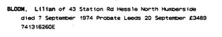

Lilian Bloom (née Culmer) 1911 - 1974
[ Home ] | [ Calendar ] | [ Surnames Index ] | [ Errors ] | [ Family History ]The child of William Culmer (a dock gateman) and Lillian Marshall (an office cleaner), Lilian Culmer, the second cousin once-removed on the mother's side of Nigel Horne, was born in Sculcoates, East Yorkshire, England on 27 Mar 19111,2,3,4,5,6,7 and baptised in Newington, East Yorkshire, England on 12 Apr 1911. She married Sydney Bloom (a grocers assistant all duties trade salesman) in Hull, East Yorkshire, England around Feb 19348.
During her life, she was living at 4 Eastbourne Street in Sculcoates on 2 Apr 19119; at 5 The Circle, Haltemprice, East Yorkshire on 29 Sept 19392; and at 43 Station Road, Hessle, East Yorkshire in 1974.
She died on 7 Sept 1974 in Hull5.
Parents
- William James was born on 26 May 1882
- Lillian Annie A was born on 18 Oct 1883
Citations
- 1911 England Census Online publication - Provo, UT, USA: Ancestry.com Operations, Inc., 2011.Original data - Census Returns of England and Wales, 1911. Kew, Surrey, England: The National Archives of the UK (TNA), 1911. Data imaged from the National Archives, London, England.
- 1939 Register - Findmypast (was the wife of the head of the household)
- England & Wales births 1837-2006 - Findmypast
- England & Wales deaths 1837-2007 - Findmypast
- England & Wales, Death Index: 1984-2005 Online publication - Provo, UT, USA: The Generations Network, Inc., 2007.Original data - General Register Office. England and Wales Civil Registration Indexes. London, England: General Register Office. © Crown copyright. Published by permission of the Cont
- England & Wales, FreeBMD Birth Index, 1837-1915 Online publication - Provo, UT, USA: The Generations Network, Inc., 2006.Original data - General Register Office. England and Wales Civil Registration Indexes. London, England: General Register Office. © Crown copyright. Published by permission of the Cont
- Yorkshire Baptisms - Findmypast
- England & Wales marriages 1837-2008 - Findmypast
- 1911 Census for England & Wales - Findmypast (was age 0 and the daughter of the head of the household)
Media
Lillian Culmer - probate

1911 England, Wales & Scotland Census Transcription - GBC-1911-RG14-28629-0305-3
England & Wales births 1837-2006 Transcription - BMD-B-1911-2-AZ-000330-003
England & Wales marriages 1837-2008 Transcription - BMD-M-1934-1-AZ-000196-145
England & Wales deaths 1837-2007 - BMD/D/1974/3/AZ/000091/015
1939 Register Transcription - TNA-R39-3180-3180G-022-21
Yorkshire Baptisms - GBPRS/YORKSHIRE/BAP/500672710
Family Tree

Map
Generated by ged2site. Last updated on Jul 3, 2024
Known Issues
Residence record for 1974 contains no citation